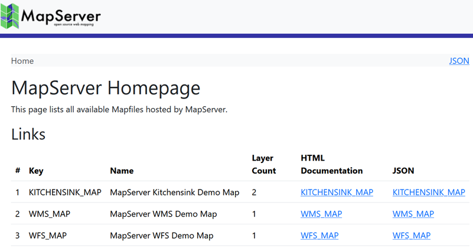
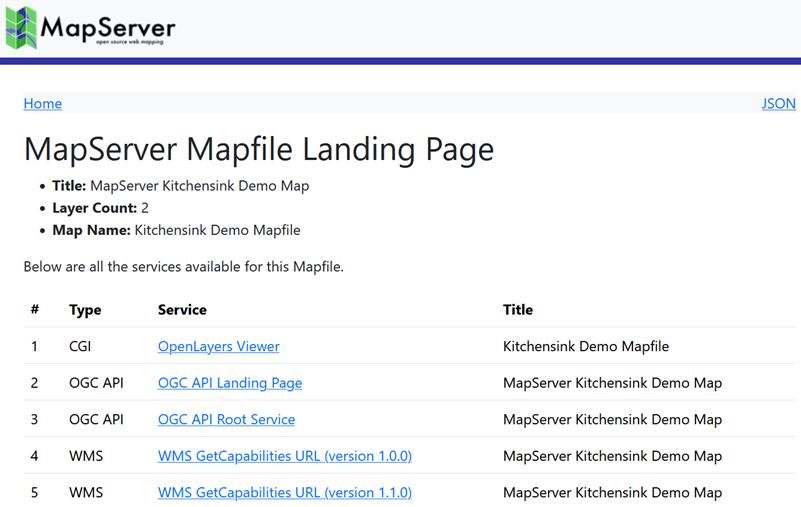

Index Page¶
- Author:
Seth Girvin
- Contact:
sethg at geographika.net
- Last Updated:
2025-09-19
Background¶
MapServer 8.6 introduces an index page, proposed in MS RFC 140: MapServer Index Page. This feature provides a single HTML page that lists all Mapfiles available in a deployment. From this page, users can select an individual Mapfile to open a dedicated page containing useful links, such as WMS capabilities documents and OGC Features API landing pages.
In addition to the HTML pages, the same information is also available as JSON services, enabling programmatic access.
The index pages are driven by the MapServer CONFIG file, and use the same template-based approach as the OGC APIs.
The index pages improves service discoverability for users and gives system administrators better visibility into which services are exposed by their MapServer instances, making it easier to restrict or disable unneeded options.
Configuration¶
The index pages require a CONFIG file. MapServer uses this file to locate and list all Mapfiles available in the system.
To activate the index pages, the config file needs to set a new MS_INDEX_TEMPLATE_DIRECTORY parameter.
This parameter specifies the folder containing the HTML templates used to render the index pages.
CONFIG
ENV
MS_INDEX_TEMPLATE_DIRECTORY "/mapserver/share/ogcapi/templates/html-index-bootstrap/"
END
MapServer provides two sets of templates, which may already be included with your deployment (depending on the package source). If not, they are available in the MapServer repository under share/ogcapi/templates.
html-index-bootstrap- HTML templates styled using the Bootstrap framework.html-index-plain- plain HTML templates with no styling.
If your system will only be serving JSON output, the MS_INDEX_TEMPLATE_DIRECTORY value can be set to an empty string.
CONFIG
ENV
MS_INDEX_TEMPLATE_DIRECTORY ""
END
In this case JSON output remains accessible by appending ?f=json to the request URL,
but if you attempt to access the HTML output MapServer will return the following error.
{"code":"ConfigError","description":"Template directory not set."}
If the configured template folder cannot be found, or if the account running MapServer does not have permission to read it, the following error will be returned:
{"code":"ConfigError","description":"InjaError error. [inja.exception.file_error]
failed accessing file at 'C:\\Missing\\landing.html' (landing.html). (C:\\Missing\\)."}
If MS_INDEX_TEMPLATE_DIRECTORY is not set, MapServer will behave as in previous versions and return standard messages when accessed without a query:
loadParams(): Web application error. No query information to decode. QUERY_STRING is set, but empty.
mapserv(): Web application error. Traditional BROWSE mode requires a TEMPLATE in the WEB section, but none was provided.
MapServer Homepage¶
The homepage is available at the root of your MapServer deployment, for example:
The page lists all Mapfiles defined in the MAPS section of your CONFIG file.
For each Mapfile, the page provides:
the map name
the number of layers
links to the Mapfile’s individual index page (available in both HTML and JSON formats)

If any Mapfiles referenced in the CONFIG file cannot be loaded, they will be displayed with an error message - “Error loading the map”.
In the JSON output, these Mapfiles will include a flag: "has-error":true. This makes it possible to monitor the service programmatically and quickly identify problems with Mapfiles.
The HTML output can be customized using the landing.html template file located in the configured template folder.
Individual Mapfile Homepages¶
When the index page functionality is enabled, each Mapfile listed in the MAPS section of the config file has its own dedicated index page.
These pages can be accessed directly by appending the Mapfile’s key to the MapServer URL.
For example, the test.map referenced by the TEST_MAPFILE key in the configuration below can be accessed using URLs such as (keys are not case-sensitive):
CONFIG
...
MAPS
TEST_MAPFILE "/opt/mapserver/test/test.map"
Each Mapfile homepage lists the services enabled for that Mapfile. The following links may be available:
CGI - link to the inbuilt MapServer OpenLayers Viewer.
Always available unless explicitly disabled via the
ms_enable_modessetting in METADATA.
OGC API - links to the OGC APIs.
“OGC API Landing Page” (HTML)
Root JSON service
Available if MapServer was compiled with the
-DWITH_OGCAPIoption and one of the following METADATA settings is present:"oga_enable_request" "*""ows_enable_request" "*"
WMS - links to the WMS GetCapabilities documents for supported versions:
1.0.0, 1.1.0, 1.1.1 and 1.3.0
Available if MapServer was compiled with the
-DUSE_WMS_SVRoption, and one of the following METADATA settings:"wms_enable_request" "*""ows_enable_request" "*"
WFS - links to the WFS GetCapabilities documents for supported versions:
1.0.0, 1.1.0, and 2.0
Available if MapServer was compiled with the
-DUSE_WFS_SVRoption, and one of the following METADATA settings:"wfs_enable_request" "*""ows_enable_request" "*"
WCS - links to the WCS GetCapabilities documents for supported versions:
1.0.0, 1.1.0, 2.0.0, and 2.0.1
Available if MapServer was compiled with the
-DUSE_WCS_SVRoption, and one of the following METADATA settings:"wcs_enable_request" "*""ows_enable_request" "*"

The HTML output can be customized using the map.html template file located in the configured template folder.